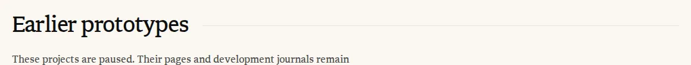
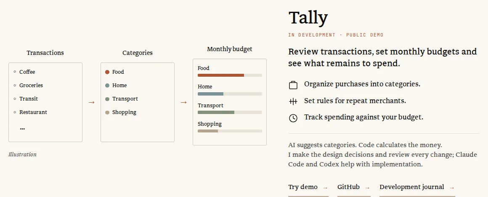
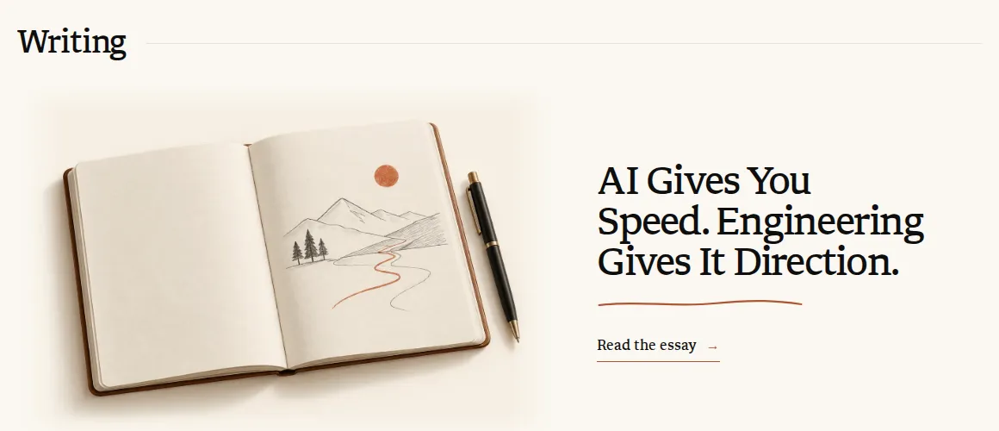
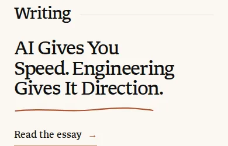

Design study · Site motion · Hallmark audit follow-up · 2026-10-22
Site motion: alternatives
Hallmark flagged three motion choices that are yours to make: the fade-ups across the site (with the section rule that draws in and the Building drawing stagger), the reveal speed, and the pen stroke under the Home essay title. I split them into five decisions. Each one plays today’s motion live, rebuilt from the site’s real CSS values, then shows two or three alternatives. Press Replay to play a demo.
Nothing here is built yet. No option changes words on the site’s pages. D3.5-B adds emphasis to one word and D3.1-D may add one privacy line; both say so. Home’s scroll-linked worlds and parallax (Your call 2) and the project card tilt and glow (Your call 3) are separate decisions and stay as they are in every demo.
Your device asks for reduced motion, so every demo shows its resting frame, which is also what the site shows you.
Together the recommended set keeps the life you asked for on every page, with one quieter movement per block and nothing stacked on top of it.
D3.1 · Reveal scope · Your call 6
Which blocks should rise in as you scroll?
Hallmark flagged the universal fade-up (#13): data-reveal is written 25 times in 9 files (Home, About, Building, Services, Audio and the Work diagrams), and every one of those blocks fades in and rises the same way, which it reads as a template rather than a choice. The verifier marked it your call: the reveals play once and settle, and one entrance per page would reverse your September 27 request for “the same life across the site”.
Decided indocs/website-content-model.md:286-298 (motion on the other pages, September 27), docs/website-system-plan.md:37-49 (the shared motion layer) and docs/prelaunch-qa-2026-09-27-motion.md. Code:src/styles/global.css:254-255 (:228-229 at 26e764a) and src/scripts/scroll-scenes.ts:117-131.
Each demo is the Building page at phone width, 1:1, with today’s timing (900ms, 26px). Replay scrolls it for you, about as fast as a quick skim; you can also scroll it yourself. Blocks already on screen appear at once, as on the site. D3.4 compares speeds.
D3.1-AKeep as is
Recommended
Why this one: you asked for this life on every page on September 27, it plays once and settles, and D3.2 to D3.4 remove the stacking and the long travel that make it read as a template.
thesuperhuman.us/building · phone · today
What changes
Nothing. Each project row, the drawing inside it and the Earlier prototypes section fade in and rise 26px the first time they scroll into view. A keyboard user who tabs into a block sees it at once.
Why it could be better
It is the shared life you asked for, it costs nothing, and every page feels part of one site.
Trade-off
The same fade-up on every block is the pattern Hallmark calls a template. On Building the drawing also rises inside its rising row (D3.3).
Effort
None.
Files
None.
Guideline check
Copy: no change · Tokens: unchanged · A11y: focus reveals at once · Reduced motion, print and no JavaScript: full resting page · Image QA: not needed.
D3.1-BHeadings only
Calmer
thesuperhuman.us/building · phone · headings
What changes
The reveal moves from whole blocks to their headings: each section title (“Work highlights”, “Earlier prototypes”) and each project’s title and status line. Text, pictures and links are in place from first paint. Scenes that start on a reveal (the Work diagrams, the Audio headphone rings) keep their trigger.
Why it could be better
Every section still arrives, so each page keeps some life, but nothing you read waits for the scroll, and far fewer things move at once.
Trade-off
Building, Services and Audio get much quieter. A heading moving above still content can look detached; it works best with the shorter travel in D3.4-C. The Building stagger loses its trigger and goes.
Effort
M
Files
src/pages/index.astro, src/pages/building.astro, src/pages/about.astro, src/pages/audio/index.astro, src/layouts/ServiceSheet.astro (the data-reveal attributes move to headings), src/components/BuildingIllustration.astro (the stagger rules go), docs/website-content-model.md:286-298.
Guideline check
Copy: no change · Tokens: unchanged · A11y: content never waits behind a reveal · Reduced motion: unchanged · Image QA: not needed.
D3.1-CPage scenes only
Hallmark’s fix
thesuperhuman.us/building · phone · scenes
What changes
The shared fade-up and the rule drawing go. What still moves is each page’s own scene: Home’s worlds, About’s chapter objects, the Writing path, the Work diagrams, the Audio headphone rings and, on Building, the drawings (as D3.3 decides; the demo shows today’s panel build). Everything else is in place from the start.
Why it could be better
This is Hallmark’s own fix: no generic entrance. Every movement that remains says something about its page, so the motion reads as designed, not applied.
Trade-off
Reverses the September 27 request: Services and the Audio lists become still, and Building moves only in its drawings. data-reveal stays as the trigger the scenes listen for.
Effort
S
Files
src/styles/global.css:254-257 (the shared fade-up and rule rules), src/pages/index.astro:239-245 (Home’s card and door reveals), docs/website-system-plan.md:37-49, docs/website-content-model.md:286-298.
Guideline check
Copy: no change · Tokens: unchanged · A11y: nothing hidden waiting for scroll · Reduced motion: scenes keep their resting frames and finish within five seconds · Image QA: not needed.
D3.1-DOnce per visit
Fewer repeats
thesuperhuman.us/building · phone · per visit
What changes
A page reveals as today the first time you open it in a browser tab. Open it again in that tab, from a nav link or a reload, and everything is already in place.
Why it could be better
Visitors move back and forth between Home, Work and Building; the reveal stays a first impression instead of a wait each time.
Trade-off
The first visit still has the full fade-up, so Hallmark’s tell stays where it counts most. Adds a small per-tab list of page paths seen (sessionStorage, read in try/catch; nothing personal). The privacy notice already describes the music pages’ tab storage; you may want a matching line.
Effort
S
Files
src/scripts/scroll-scenes.ts, docs/website-system-plan.md:37-49, src/pages/privacy.astro (optional line, wording for your approval).
Guideline check
Copy: page copy unchanged; an optional privacy line needs your approval · Tokens: unchanged · A11y: unchanged · Reduced motion: unchanged · Storage blocked or empty: the page reveals as today · Image QA: not needed.
D3.2 · Section rule · Your call 6
Should the hairline beside each section heading draw itself in?
When a section reveals, the rule after its heading also grows from the left over 1.1 seconds, starting 200ms late. It is the longest timing in the shared layer and a second movement on every heading it touches: four on Home, one on Building. The audit names dropping it as the cheapest calming step (#13, #51).
Where it lives:src/styles/global.css:256-257 (:230-231 at 26e764a). The shared-layer comment describes it, but no design doc or QA record asks for it; it shipped with the September 27 motion release (docs/prelaunch-qa-2026-09-27-motion.md).
D3.2-AKeep as is
Live now
CI capture · 08e9b22 · /building 1280 · resting frame

Home · Work highlights and Writing · today
What changes
Nothing. The heading rises with its block and the rule scales from nothing to full width over 1100ms, 200ms behind it.
Why it could be better
A quiet drawn detail that marks the start of a section.
Trade-off
Two movements on every heading, the slowest timing in the shared layer, and nothing in the record asked for it.
Effort
None.
Files
None.
Guideline check
Copy: no change · Tokens: unchanged · Reduced motion: rule shown at rest · Image QA: not needed.
D3.2-BRule at rest
Recommended
Why this one: the hairline is structure, not news; letting it rest takes the second movement off every heading for the cost of deleting two CSS lines.
Home · Work highlights and Writing · rule at rest
What changes
The heading still arrives with its block; the rule is simply there.
Why it could be better
One movement per heading. The heading’s arrival already marks the new section.
Trade-off
Home loses a small drawn detail.
Effort
S
Files
src/styles/global.css (delete :256-257, update the comment at :251-252).
Guideline check
Copy: no change · Tokens: unchanged · Reduced motion: unchanged · Image QA: not needed.
D3.2-CDraw on Home only
Home stays expressive
Home · rule draws
Building · rule at rest
What changes
Home’s four section rules keep drawing; Building’s Earlier prototypes rule, and any later section rule outside Home, rests.
Why it could be better
The system plan lets Home be expressive while Work makes evidence easy to assess (docs/website-system-plan.md:16-17); this keeps the flourish where expression is the point.
Trade-off
Home already has the most motion, so the rule adds least there. One more page-specific rule to keep in step.
Effort
S
Files
src/styles/global.css:256-257 (remove), src/pages/index.astro (add under Home’s own reveals, :238).
Guideline check
Copy: no change · Tokens: unchanged · Reduced motion: unchanged · Image QA: not needed.
D3.3 · Building drawings · Your call 6
Should each Building drawing build itself panel by panel, or arrive with its row?
Each drawing on /building is a reveal block inside a reveal block. On desktop the row and the drawing both start 26px low and rise together, so the drawing travels 52px and fades in more slowly than the text beside it (I measured both at 26px on the dev server); then its panels rise another 12px at 0, 180 and 360ms, and Tally’s budget bars grow. On phones the drawing rises on its own when it scrolls in. The audit calls the stagger undocumented and names dropping it as a cheap calming step.
Where it lives:src/components/BuildingIllustration.astro:6 and :58-65 (:57-63 at 26e764a), inside the row reveal at src/pages/building.astro:37. The September 27 record for Building says only “the feature and the project rows rise in” (docs/website-content-model.md:296).
The demos show the drawings at the size they render on the page: 614px wide on desktop, phone layout on a phone.
D3.3-AKeep as is
Live now
CI capture · 08e9b22 · /building 1280 · resting frame

Tally · row and drawing rise, panels step in
What changes
Nothing.
Why it could be better
The drawings assemble as you watch, which suits a page about making things.
Trade-off
Three movements on one figure (row, drawing, panels), the drawing lags the words beside it on desktop, and no doc asked for the build.
Effort
None.
Files
None.
Guideline check
Copy: no change · Tokens: unchanged · Reduced motion: finished drawing · Image QA: not needed.
D3.3-BArrive with the row
Recommended
Why this one: it matches the September 27 record for Building (“the project rows rise in”), leaves one movement per row, and is a deletion.
Tally · moves with its row
What changes
The drawing loses its own reveal and the panel stagger, and moves with its row as one block. The budget bars rest at their values.
Why it could be better
One movement per row, and the drawing arrives with the words that explain it.
Trade-off
The drawings lose their small build; Building’s only entrance becomes the shared row reveal.
Effort
S
Files
src/components/BuildingIllustration.astro (drop data-reveal at :6 and the rules at :58-65).
Guideline check
Copy: no change · Tokens: unchanged · Reduced motion: unchanged · Image QA: not needed.
D3.3-CShow the flow
Motion that explains
Tally · arrows in turn, then budgets fill
Kaillera-next · lines out, then the peer line
Personal website · the After waveform plays in
What changes
The drawing arrives with its row (as B). When half of it is on screen it plays once, in reading order: Tally’s arrows light up in turn and the budgets fill; Kaillera’s dashed lines reach from the game room to each player, then the peer line joins Player 1 and Player 2; on the website drawing, the After waveform plays in from left to right under the Before one. It uses the existing play-once hook (data-scene-play).
Why it could be better
The motion shows what each project does, the “motion sized to its job” idea from September 27, instead of a generic build.
Trade-off
More motion than today on a page Hallmark already finds busy, three small scenes to maintain, and a new line in the content model.
Copy: no change · Tokens: house curve · A11y: drawings stay aria-hidden · Reduced motion: finished drawing; plays once and rests within five seconds (WCAG 2.2.2) · Image QA: not needed, the existing drawings only move.
D3.3-DOnly the budgets fill
One meaningful move
Tally · moves with its row, budgets fill
What changes
As B, but Tally’s four budget bars still fill once, from empty to their values.
Why it could be better
Keeps the one movement that shows Tally’s job, spending against a budget, without the stacked entrance.
Trade-off
One drawing moves and two don’t. Bars filling can read as data, though the figure is labelled Illustration.
Effort
S
Files
src/components/BuildingIllustration.astro.
Guideline check
Copy: no change · Tokens: unchanged · Reduced motion: bars at rest · Image QA: not needed.
If you pick D3.1-C (page scenes only), C here becomes Building’s scene, and B or D leaves Building nearly still.
D3.4 · Reveal speed and tokens · Your call 22
How long and how far should a reveal move, and should the timings get names?
Hallmark flagged the timings (#51): reveals take 900ms and the section rule 1.1 seconds, outside its 420ms limit, and each file writes its own numbers. The verifier kept 900ms as part of the calm feel and called duration tokens a maintenance win either way. One thing the numbers hide: the house curve front-loads the movement, so today’s reveal is 83% done after 300ms and moves less than 2px in its last 450ms. It reads as about half a second; what you notice is the 26px of travel.
Decided indocs/website-system-plan.md:16 (“Peace is the atmosphere”) and docs/prelaunch-qa-2026-09-27-motion.md:32-34 (the hero settles within about 1.5 seconds). Today’s values: reveal 900ms and 26px (src/styles/global.css:254-255), section rule 1100ms after 200ms (:256), Home doors 800ms and 24px (src/pages/index.astro:242-243), Building panels 700ms and 12px (src/components/BuildingIllustration.astro:59-60), link arrow 160ms, page cross-fade 180ms.
The options side by side
A, B · 900ms · 26px
C · 600ms · 12px
D · 900ms · 0px
Hallmark · 400ms · 8px
Three blocks enter one after another, 320ms apart, as they would on a scroll. All four use the house curve. A and B look the same; B only names the values. The last lane is Hallmark’s own range (400ms, 8px), shown for reference; it is not an option.
D3.4-AKeep as is
Live now
What changes
Nothing. 900ms and 26px, written in each file.
Why it could be better
The approved feel; the long tail adds calm.
Trade-off
Reveal timings written separately in each file drift apart as pages change, and Hallmark’s range check keeps flagging them.
Effort
None.
Files
None.
Guideline check
Copy: no change · Reduced motion: unchanged · Image QA: not needed.
D3.4-BName today’s timings
No visible change
/* src/styles/global.css, beside --ease-site */
--dur-hover: 160ms; /* link arrow */
--dur-page: 180ms; /* page cross-fade */
--dur-reveal: 900ms; /* blocks rising in */
--rise-reveal: 26px;
--dur-draw: 1100ms; /* only if D3.2 keeps the rule drawing */
What changes
The same timings, named once. The shared reveal, the Home doors and the Building panels use them. Scene choreography (Home’s worlds, the Writing path, About’s objects) keeps its own timings, the way illustration colours stay local.
Why it could be better
Nothing visible changes, and one edit retunes every page.
Trade-off
The doors (800ms, 24px) and Building panels (700ms, 12px) join the shared values, a small change there. Hallmark still flags 900ms.
Copy: no change · Tokens: new names beside --ease-site · Reduced motion: unchanged, all inside the no-preference query · Image QA: not needed.
D3.4-CQuieter: 600ms and 12px, named
Recommended
Why this one: it keeps the rise your September 27 records describe and the life on every page, but halves the travel that makes the fade-up look stock and settles sooner; the named timings keep every page in step.
--dur-hover: 160ms;
--dur-page: 180ms;
--dur-reveal: 600ms;
--rise-reveal: 12px;
--dur-draw: 700ms; /* only if D3.2 keeps the rule drawing */
What changes
As B, with reveals a third shorter and half the travel. A block is 93% in place after 300ms.
Why it could be better
Still calm, but closer to settling than arriving; a fast scroller reads text sooner.
Trade-off
A visible change to a feel you approved, and still outside Hallmark’s 420ms limit. Its own range (400ms and 8px, the reference lane) passes the check but reads as interface feedback rather than calm.
Effort
S
Files
As B.
Guideline check
Copy: no change · Tokens: as B · Reduced motion: unchanged · Image QA: not needed.
D3.4-DFade in place: 900ms, no rise, named
No travel
--dur-reveal: 900ms;
--rise-reveal: 0px; /* the shared reveal fades only */
--dur-draw: 1100ms; /* only if D3.2 keeps the rule drawing */
What changes
As B, but blocks fade in where they will rest, at today’s length, with no travel. The Home doors and Building panels fade the same way.
Why it could be better
It drops the “up” from the fade-up, the part that reads as stock, and keeps the approved length. Nothing shifts, so the eye never follows a moving block.
Trade-off
With no travel, a fade can read as content loading late. Every block still has an entrance, so Hallmark’s #13 stays, and the September 27 records say the rows “rise in”.
Effort
S
Files
As B, plus docs/website-content-model.md:286-298 (“rise in” becomes “fade in”).
Guideline check
Copy: no change · Tokens: as B · Reduced motion: unchanged · Image QA: not needed.
D3.5 · Essay pen stroke · Your call 23
Should the pen stroke under the Home essay title stay a free flourish, sit right under a word, or go?
In Home’s Writing section a hand-drawn terracotta stroke, 240px wide, starts about 30px below the baseline of the title’s last line on desktop (23px on phones, both measured on the CI captures) and draws itself after the title inks in. Hallmark’s gate for decorative underlines (#57) asks for a line within a few pixels of its text, or none; at this distance it reads as a divider.
Decided indocs/website-content-model.md:270-271 (“The essay title is inked in and underlined with a pen stroke”, September 27). Code:src/pages/index.astro:116 (markup), :216-218 (style), :247-251 (motion).
D3.5-AKeep as is
Live now
CI capture · 08e9b22 · / 1280 · resting frame

CI capture · 08e9b22 · / 390

Desktop copy column · 447px · today
Phone · 342px · today
What changes
Nothing.
Why it could be better
A free, hand-drawn mark echoes the notebook beside it.
Trade-off
It floats between the title and the link, so it reads as a divider rather than an underline. Its draw uses plain ease-in-out and starts before the ink finishes.
Effort
None.
Files
None.
Guideline check
Copy: no change · Reduced motion: stroke at rest · Image QA: not needed.
D3.5-BUnderline “Direction”
Recommended
Why this one: it keeps the hand-drawn mark your content model describes and makes it a real underline, on the word the essay argues for and the Writing page draws as a path.
Desktop copy column · 447px
Phone · 342px
Study drawing: the stroke is redrawn shorter to fit the word. Production art would need image QA.
What changes
A shorter stroke in the same hand sits right under “Direction”, 3 to 5px below the letters as the line waves, and draws once the ink has passed the word. The title’s words are unchanged; the page wraps the word in a span. Emphasis change, needs approval.
Why it could be better
It reads as emphasis instead of a divider, and it stays with the word at any width.
Trade-off
It stresses one word, an editorial choice. An accent line under a word can suggest a link; the wave and the heading size make that unlikely.
Effort
S
Files
src/pages/index.astro (title markup, stroke style and motion on --ease-site), docs/website-content-model.md:270-271.
Guideline check
Copy: words unchanged, emphasis needs your approval · Tokens: house curve · A11y: stroke aria-hidden, title reads the same · Reduced motion: stroke at rest · Image QA: small SVG stroke, label it as a study until approved.
D3.5-CPen line under the link
Points to the action
Desktop copy column · 447px
Phone · 342px
Study drawing: the stroke is redrawn to the link’s width. Production art would need image QA.
What changes
No stroke under the title. The straight accent rule under “Read the essay” becomes the hand-drawn stroke, drawn after the title inks in.
Why it could be better
The gesture moves to the action: the pen marks where to go next.
Trade-off
One link unlike every other house link (the house underline is Your call 24), and its hover and focus states need their own check.
Copy: no change · Reduced motion: unchanged · Image QA: not needed.
Your calls
What I need from you
Pick one option per decision; the recommended set is the default if you say “go with the recommendations”.
D3.1Which blocks rise inA keep · B headings only · C page scenes only · D once per visit.Recommended: A
D3.2The section ruleA keep drawing · B rule at rest · C draw on Home only.Recommended: B
D3.3The Building drawingsA keep the build · B arrive with the row · C show the flow · D only the budgets fill.Recommended: B
D3.4Reveal speed and tokensA keep · B name today’s timings · C 600ms and 12px, named · D fade in place, no rise.Recommended: C
D3.5The essay pen strokeA keep · B underline “Direction” (emphasis needs your approval) · C pen line under the link · D ink only.Recommended: B
NoteHow the picks combineD3.4 applies to whatever D3.1 keeps. D3.1-C removes the rule drawing too, so D3.2 then only matters on Home. With D3.1-C, D3.3-C becomes Building’s scene. With D3.1-B, D3.2-A keeps the rule drawing beside each moving heading.
After you choose: the picks go in one change with npm run check and npm test, a check of reduced motion, keyboard focus and print, and updated motion records in docs/website-content-model.md and docs/website-system-plan.md.
Kazon WilsonMenu
Building
Things I’m making.
What you can do with each project, and how I’m building it.
Tally
In development · public demo
Review transactions, set monthly budgets and see what remains to spend.
Organize purchases into categories.
Set rules for repeat merchants.
Track spending against your budget.
AI suggests categories. Code calculates the money.
I make the design decisions and review every change; Claude Code and Codex help with implementation.
Try demo→GitHub→Development journal→
Kaillera-next
In development · playable demo build
Open a link and play supported retro games with friends.
Create a room and invite friends.
Play together or watch a game.
Use a controller or touch controls.
Built on EmulatorJS, with rollback and host-streaming modes.
Explore build→GitHub→Development journal→
Personal website
Live - evolving
See what I can build for you, hear what I can do for your music, and hire me.
Explore my software work and hear my mixes.
Tell me what you want to build or finish.
Start a paid software or audio project.
I design the site and review every change; Claude Code helps with implementation.
Work with me→GitHub→Development journal→
Earlier prototypes
These projects are paused. Their pages and development journals remain available.
Local prototype
The Engineer’s Daily →
Practice coding through a story, alongside Scripture, prayer and reflection.
Internal prototype
Threadline →
Pick up interrupted development work with its context intact.
The journals show what changed, what I tested and what I’m working on next.
Kazon WilsonGitHubLinkedInAudioWork with meSupport my workPrivacy
The Superhuman Group LLC · 2026
Transactions
◦ Coffee
◦ Groceries
◦ Transit
◦ Restaurant
…
→
Categories
Food
Home
Transport
Shopping
→
Monthly budget
Food
Home
Transport
Shopping
Illustration
Game room
•••
Player 1
Player 2
Spectator
Invite friends
•••
Player 1
•••
Player 2
•••
Spectator
Watch only
Illustration
Explore the work
Compare the sound
Before
After
Start a conversation
Your name
What do you want to make?
Send a message
Illustration
Work highlights
Lyft
5,000 → 100,000+ rows per batch
I changed Lyft’s driver-bonus tool so support could run and monitor larger batches without handing the work to on-call engineers.
Writing
AI Gives You Speed. Engineering Gives It Direction.
Earlier prototypes
These projects are paused. Their pages and development journals remain available.
Tally
In development · public demo
Review transactions, set monthly budgets and see what remains to spend.
Try demo→
AI Gives You Speed. Engineering Gives It Direction.
Read the essay →
AI Gives You Speed. Engineering Gives It Direction.
Read the essay →
AI Gives You Speed. Engineering Gives It Direction.
Read the essay →
AI Gives You Speed. Engineering Gives It Direction.